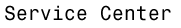

| [kryptographie
in d.land]
[chaos computer club] [HotWired] [electronic frontier f.] [anacam] [amnesty international] [webcams] [geek chic] [china.com] [the nsa] |
Diese Seite enthält Informationen
und Hilfestellungen die für andere nützlich sein könnten.
Ich werde diese Seite teilweise in deutsch, teilweise in englisch und teilweise
zweisprachig halten, je nachdem was mir passender erscheint.
Ich werde in Zukunft keine vertraulichen Mitteilungen
annehmen oder versenden, die nicht verschlüsselt worden sind. Alles
andere wäre leichtsinnig.
Da es auf diesem Gebiet immer wieder Mißverständnisse und Anfangsschwierigkeiten gibt, will ich mit diesen Seiten einen einfachen und leicht verständlichen Überblick geben. Außerdem gibt es hier schrittweise Anleitungen und alle Programme um seine e If you want to communicate, you can send me an email to unp2@rz.uni-karlsruhe.de, or you can still send me s-mail and call me on the phone. (However, you will still have to send me email first). |